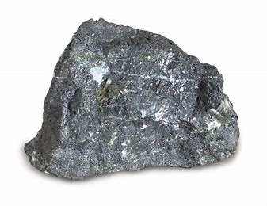
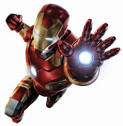
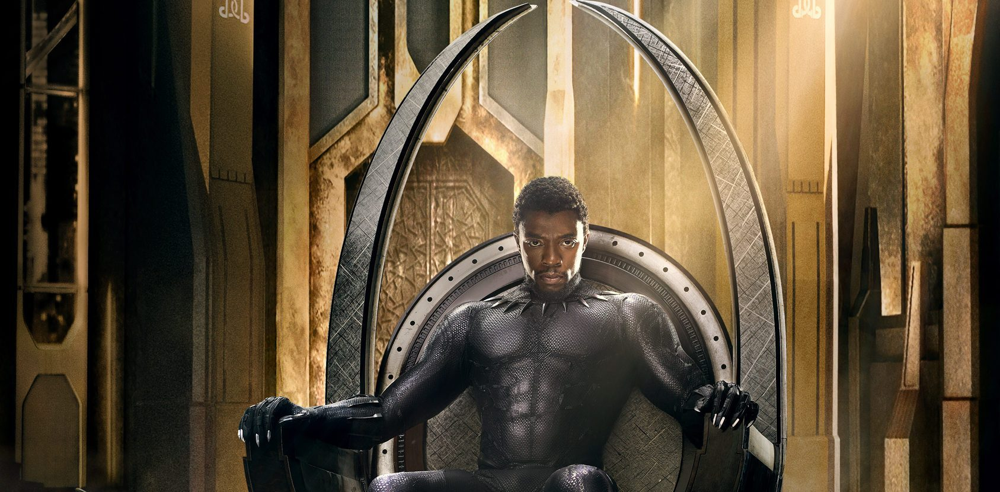

钢冶炼 炼钢主要是以高炉炼成的生铁和直接还原炼铁法炼成的海绵铁以及废钢为原料，用不同的方法炼成钢。主要的炼钢方法有转炉炼钢法、平炉炼钢法、电弧炉炼钢法3类（见钢，转炉，平炉，电弧炉）。以上3种炼钢工艺可满足一般用户对钢质量的要求。为了满足更高质量、更多品种的高级钢，便出现了多种钢水炉外处理（又称炉外精炼）的方法。如吹氩处理、真空脱气、炉外脱硫等，对转炉、平炉、电弧炉炼出的钢水进行附加处理之后，都可以生产高级的钢种。对某些特殊用途，要求特高质量的钢，用炉外处理仍达不到要求，则要用特殊炼钢法炼制。如电渣重熔，是把转炉、平炉、电弧炉等冶炼的钢，铸造或锻压成为电极，通过熔渣电阻热进行二次重熔的精炼工艺；真空冶金，即在低于1个大气压直至超高真空条件下进行的冶金过程，包括金属及合金的冶炼、提纯、精炼、成型和处理。钢液在炼钢炉中冶炼完成之后，必须经盛钢桶（钢包）注入铸模，凝固成一定形状的钢锭或钢坯才能进行再加工。
马克 1代的装备相当简陋完全由普通的钢铁纯手工打造只能起到抵抗小型火器和肢体冲突的作用就连动力核心都是从摩托车上卸下来的废金属加以改良制成的。 此外马克1代并不具备真正的飞行能力只能利用简易的气压装置做几次简单的跳跃动作胸口的光束炮作用范围也只有几码远。不过即使如此配置对付几个恐怖分子还是绰绰有余的最终托尼·斯塔克靠着这套战装甲逃出生天被空军上校、《钢铁侠2》中的“战争机器”詹姆斯·罗迪所救得以回到美国。
想知道更多，请百度一下
特查拉（T'Challa）是瓦坎达（Wakanda）国王—— 黑豹（Black Panther）。 其父特查卡（T'Chaka）为前任黑豹，历史上曾有陨石落在瓦坎达，而带来大量稀有稀有金属吸音钢（Vibranium）。特查拉令国家瓦坎达隐藏并与外间隔绝，他将Vibranium卖出足以送国内的学士到外国念书从而令瓦坎达成为了高科技国家。不过探险家尤利西斯·克劳发现了瓦坎达国，他秘密地建了一台利用Vibranium作原料的武器。当尤利西斯·克劳被发现之后他利用其武器杀掉初代黑豹特查卡，年轻的特查拉为了报父仇废掉了克劳的右手，但是最后还是让克劳逃了。为了成为新一任黑豹，特查拉要经过多重考验以证明他有能力保护国人。成为黑豹后他到了英国牛津大学念书以学习治国之道。刚前往欧美学习，他遇到了刚刚建立的复仇者联盟，还攻击神奇四侠——为了试验他们看他们有没有能力帮助他打败回归瓦坎达的克劳。后来他逐渐被这个团体接纳，黑豹也完全放下戒备，与诸位复仇者一同出生入死。黑豹的性格像极了美国队长，沉稳中带有王者风范。
